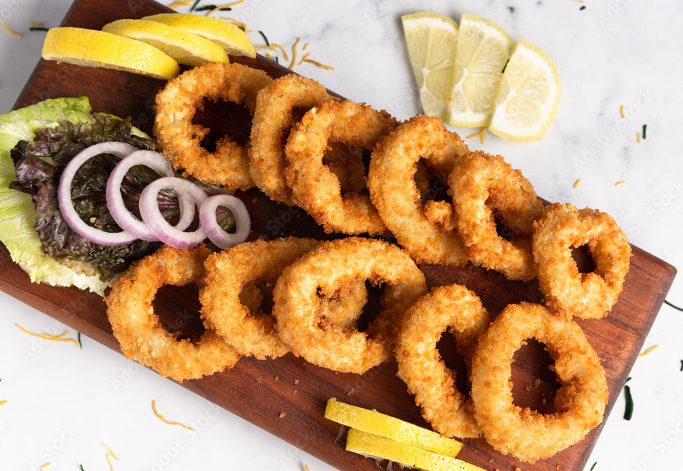
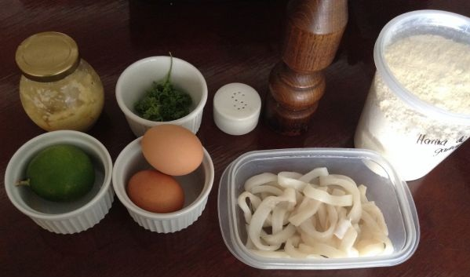
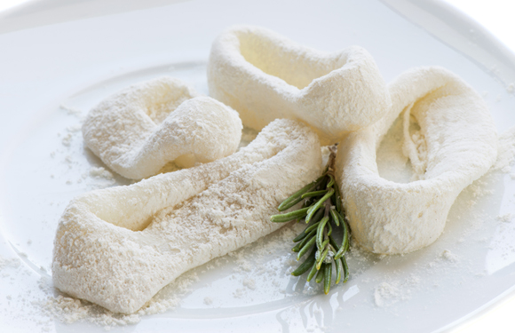

RABAS A LA ROMANA
Riquísimas y Fáciles de Hacer!!

INGREDIENTES:

- Tubo de calamar 1 u.
- Harina 50g.
- Leche 150ml.
- Jugo de limón
- Pan rallado 50g.
- Huevo 1 u.
- Sal 5g.
- Pimienta 3g.
- Aceite c/n
PROCEDIMIENTO:

- Cortar el tubo de calamar en aros y remojarlos en leche por 24hs.
- Escurrir y pasarlos por harina retirándole el excedente.
- Sumerjir por huevo batido cada aro.
- Finalmente, rebozarlos con pan rallado.
- Freírlos a 180°C aproximadamente.
- Servirlas con un limón cortado en gajos.
Y LISTO! A DISFRUTARLAS!!